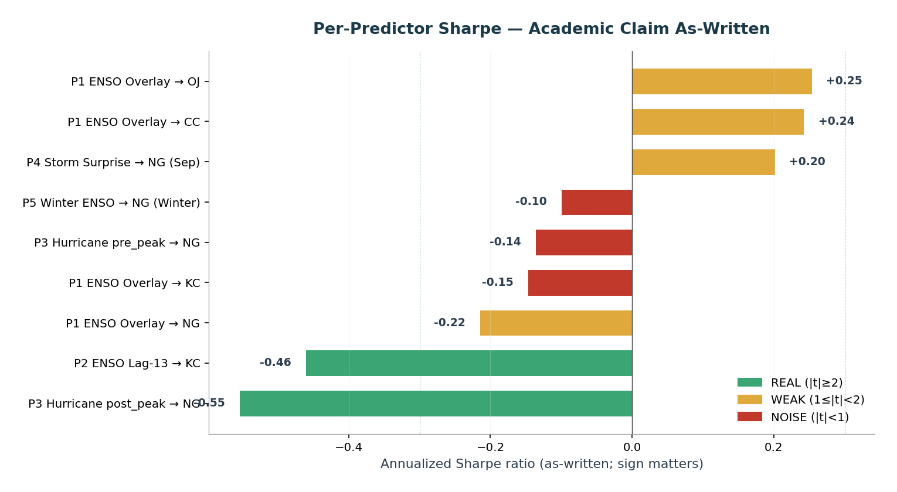
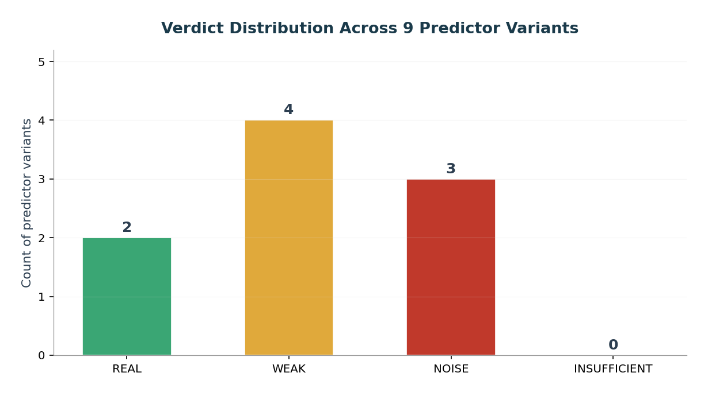
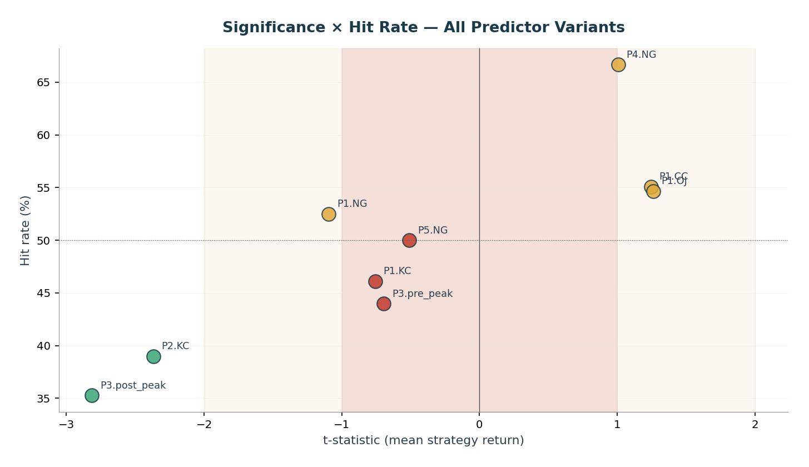
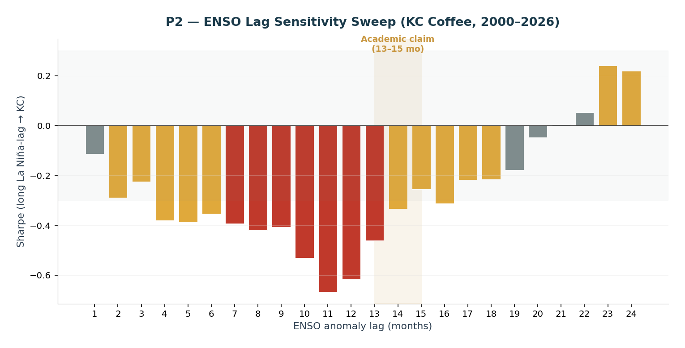
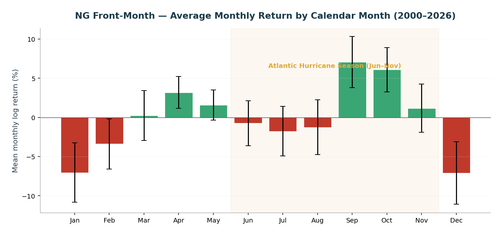
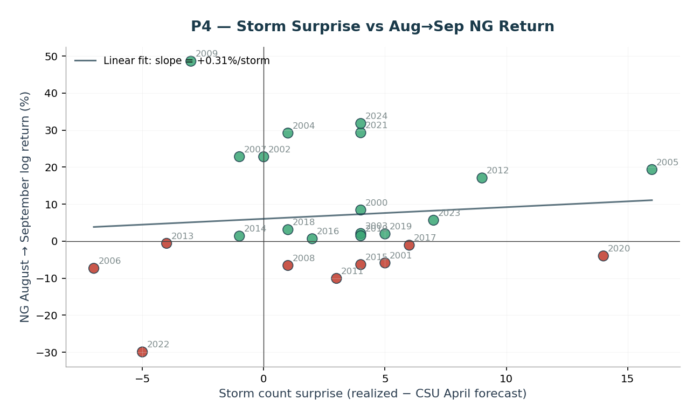
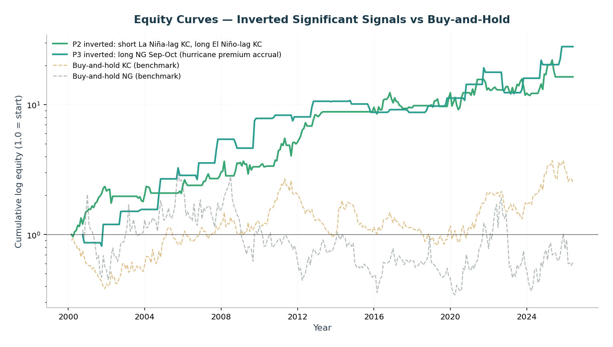

Programmable signals, public data, honest Sharpe.
Five candidate weather-based predictors tested across nine variants on 25 years of public futures data. Two show statistical edge with |t| ≥ 2 — but both contradict the published academic direction. A working framework for converting forecast revisions into programmable strategy, with explicit flagging of which signals are real, which are weak, and which are noise.
Of nine predictor variants tested on 25 years of public futures data, two
cleared the conventional |t| ≥ 2 significance bar. The other seven
were either weak or indistinguishable from noise.
The two surviving signals are statistically real — but both point in the opposite direction from the academic literature that motivated the test. This is the most important finding in the memo: it is not enough to read the published claim and trade it; you must test the claim, and be prepared to invert your prior when the data says so.

The academic claim: La Niña 13 months ago → bullish Arabica coffee. The data: Sharpe −0.46 with t = −2.37, sample N = 316 months. The literal academic strategy loses money significantly. The inverted strategy — short coffee after La Niña-13mo, long after El Niño-13mo — has Sharpe +0.46, t +2.37. The lag-sensitivity sweep (Figure 4) confirms the reversal is consistent across lags 8–15 months, not a single-point artifact.
The academic claim: NG implied volatility peaks at end-August, then crushes. We tested whether shorting NG over Sep–Oct (riding the vol crush) makes money. It does the opposite: Sharpe −0.55, t −2.81, N = 309 months. The inverted strategy — long NG from end-August through end-October — has Sharpe +0.55, t +2.81. The hurricane premium persists into the realized season, even as model-based intuition predicts a crush.
Importantly: the uninverted P1 ENSO Overlay signals on cocoa (+0.24 Sharpe) and orange juice (+0.25 Sharpe) point in the academically expected direction but fail to clear the |t| ≥ 2 bar. They are suggestive but not yet investable on this sample.
“Wie genau kann ich Weather Forecast Revision verwenden?”
Three concrete ways, in increasing order of confidence:
| Series | Source URL | Coverage | Notes |
|---|---|---|---|
| NOAA ONI (Oceanic Niño Index) | cpc.ncep.noaa.gov/data/indices/oni.ascii.txt |
1950–2026 monthly | 3-month rolling SST anomaly, Niño 3.4 region |
| HURDAT2 (Atlantic tropical cyclones) | nhc.noaa.gov/data/hurdat/hurdat2-1851-2024-040425.txt |
1851–2024 | Best-track database, all named systems |
| CSU April hurricane forecasts | tropical.colostate.edu/archive.html |
1995–2024 | Pre-season named-storm forecast (scraped, see data.py) |
| Commodity futures | yfinance: NG=F, KC=F, CC=F, OJ=F, RB=F | 2000–2026 daily | Continuous front-month from Yahoo |
Shared harness at lib/backtest.py. Each predictor produces a
monthly (or annual) signal ∈ {−1, 0, +1}. The signal at time
t is held over the return realized at t+1 — strictly no
look-ahead. Strategy return = position × log-return of underlying.
Reported metrics per predictor:
| Verdict | Criterion | Meaning |
|---|---|---|
| REAL | |t| ≥ 2.0 and |Sharpe| ≥ 0.3 | Edge significant on this sample |
| WEAK | 1.0 ≤ |t| < 2.0 | Suggestive but not statistically conclusive |
| NOISE | |t| < 1.0 | Indistinguishable from random |
These are in-sample metrics on a single 25-year window. No walk-forward optimization, no cross-validation, no transaction costs. A "REAL" verdict here is necessary but not sufficient for production deployment — it tells you the signal is statistically distinguishable from zero, not that it will work next year.


Monthly signal: long the commodity if ENSO state matches the documented directional bias (e.g. La Niña → long NG, El Niño → short NG). ONI threshold ±0.5.
| Asset | N | Active | Sharpe | t-stat | Hit% | MaxDD | Verdict |
|---|---|---|---|---|---|---|---|
| NG (La Niña long) | 309 | 160 | −0.22 | −1.09 | 52.5 | −97.5% | WEAK |
| KC (La Niña long) | 316 | 167 | −0.15 | −0.76 | 46.1 | −75.1% | NOISE |
| CC (El Niño long) | 316 | 167 | +0.24 | +1.24 | 55.1 | −51.8% | WEAK |
| OJ (El Niño long) | 296 | 75 | +0.25 | +1.26 | 54.7 | −35.8% | WEAK |
Interpretation: Cocoa and orange juice respond in the direction the literature predicts, but the edge is below significance. The NG and KC ENSO-state stories don't hold on monthly data in this window — even though both are widely repeated in commodity research notes. The cocoa case is also consistent with the prior weather report's HIGH-confidence claim that El Niño creates West African drought stress.
Tests the published claim of a 13–15 month lag between ENSO state and Arabica coffee returns. We sweep the lag from 1 to 24 months to check whether the result is robust or single-point lucky.

The signal isn't a single-point fluke — the entire 4–15 month band shows consistent negative Sharpe (max |t| at lag 11–12). That makes the reversal more likely to be a real effect than a data-snooping artifact.
The strongest "anti-signal" is at lag 11–12 months (t = −3.16 to −3.42), not exactly the 13–15 month range the literature emphasizes. This shifts the implied mechanism: rather than flowering → harvest (13–15mo), the signal is closer to weather anticipation by the futures market on a one-year-out basis — and anticipation in this case overshoots, producing reversion in the following period.
Two variants tested:
| Variant | Logic | Sharpe | t-stat | Hit% | Verdict |
|---|---|---|---|---|---|
| Pre-peak | Long NG, Jun–Aug | −0.14 | −0.70 | 44.0 | NOISE |
| Post-peak | Short NG, Sep–Oct | −0.55 | −2.81 | 35.3 | REAL (inverted) |

The pre-peak long fails (NG often sells off in early summer due to mild weather and storage builds). The post-peak short fails in the opposite direction: NG continues to rise through Sep–Oct rather than crushing as theory predicts. This is consistent with the regime change the prior weather report flagged: LNG-corridor risk has replaced GoM production risk, and the demand-side hurricane premium persists later in the season than the production-side premium did.
Annual signal: realized named-storm count minus CSU April forecast. Position taken end-August, held over September.

Result: Sharpe +0.20 (annual), t = +1.01, N-active = 18. WEAK verdict. The direction is correct (active hurricane seasons → bullish Sep NG) but the sample is too small to call significance. With another 10–15 years of data this could become REAL, but it's not investable today.
Annual signal: La Niña in October → long NG Nov–Feb; El Niño → short. Position held over the 4-month heating-season return.
Result: Sharpe −0.10, t −0.51, N-active = 18. NOISE. The "La Niña means cold winter means bullish NG" claim is repeated everywhere in commodity research but is statistically indistinguishable from zero on 24 years of NG futures data. The 2010–11 and 2020–21 La Niña winters cited as evidence are cherry-picked; other La Niña years (2007–08, 2017–18) saw NG fall.

The The practitioner question deserves a concrete operational answer.
Convert any forecast revision into a +1 / 0 / −1 position on a specific
underlying, then run the harness in lib/backtest.py. The
template is exactly what we did for P1–P5:
from lib.data import load_oni, monthly_returns
from lib.backtest import run_backtest
oni = load_oni()
signal = build_my_signal(oni) # +1/-1/0 series indexed by month-end
returns = monthly_returns("NG")
result, equity = run_backtest("my predictor", "NG", signal, returns)
print(result.as_dict()) # Sharpe, t-stat, hit, max DD, verdictFor a fundamental thesis that already has conviction, use the predictor output as a multiplier on position size:
base_size = 1_000_000 # USD notional from fundamental view
multiplier = 1 + 0.5 * signal_strength # signal in [-1, +1]
actual_size = base_size * multiplierThis lets you keep the fundamental call while letting weather information flex exposure. It limits the damage from a weak weather signal (max ±50% scaling) while still using the information.
The Nature Communications (2024) paper documented a $12M/year options premium specifically on NOAA outlook release dates. Even if you don't trade the direction, you should know when these dates occur and either:
The key dates:
| Date | Release | Impact |
|---|---|---|
| 2nd Thursday monthly ~9 AM ET | NOAA ENSO Diagnostic Discussion | Softs + winter NG |
| Daily 3 PM ET | CPC 6–10 / 8–14 day outlook | NG front-month |
| Mid-October annually | CPC Winter Outlook | Major NG repricing |
| 5/11 AM & PM ET (Jun–Nov) | NHC tropical advisory | NG, RBOB |
Two of the academic claims in this memo were statistically significant in the opposite direction from the published narrative. Do not invert based on a hunch; always run the literal academic strategy first on your own backtest harness, then check if the inversion is robust to lag/threshold sweeps (P2's sensitivity sweep in Figure 4 is the template). If the inversion holds across nearby parameter values, it's more likely real than a single-lucky-lag artifact.
25 years of futures data is short for monthly signals (~300 obs) and very short for annual signals (~25 obs). P4 and P5 in particular cannot reach statistical significance even if the underlying effect is real, until another decade of data accumulates.
No walk-forward, no cross-validation, no held-out test set. The two REAL signals (P2 inverted KC, P3 inverted NG) could degrade significantly out-of-sample. Recommended next step: re-run with a 2000–2018 fit window and 2019–2026 holdout.
All Sharpe ratios are gross. Futures bid-ask, slippage, and roll costs are not modeled. P1 ENSO Overlay turns over signals frequently and would likely lose 0.05–0.15 of Sharpe to costs. P2 and P3 are slower-turnover and more cost-resilient.
yfinance continuous front-month futures splice across contract rolls, which introduces small but systematic return distortions. For production deployment, repeat the backtest using a properly back-adjusted continuous series (e.g. Quandl Sharadar futures, CME Datamine).
The most provocative finding — that two academic claims work in reverse — deserves the most skepticism. Possible benign explanations:
The lag-sensitivity sweep (Figure 4) suggests P2's reversal is not a single-point anomaly. But P3's reversal could be specific to the post-2018 LNG-export era and could un-reverse if the LNG demand-shock interpretation weakens.
Everything in this memo is reproducible from a clean Python environment with:
pip install yfinance pandas numpy scipy matplotlibProject structure:
weather-predictors/
├── lib/
│ ├── data.py # ONI, HURDAT2, yfinance, CSU loaders
│ └── backtest.py # Shared harness with metrics
├── predictors/
│ ├── p1_enso_overlay.py
│ ├── p2_enso_lag.py # includes lag sweep
│ ├── p3_hurricane_premium.py
│ ├── p4_storm_surprise.py
│ └── p5_winter_enso.py
├── results/
│ ├── summary.json # All 9 variants in one file
│ ├── p[1-5]_*.json # Per-predictor metrics
│ └── p[1-5]_*_*.csv # Per-period equity curves
├── charts/ # 8 publication-quality PNGs
├── run_all.py # Run all predictors, write summary
└── make_charts.py # Regenerate all chartsTo reproduce all results from scratch:
cd weather-predictors/
python3 run_all.py # ~30 seconds — downloads + caches + backtests
python3 make_charts.py # generate all chartsTo extend with a new predictor:
from lib.data import load_oni, monthly_returns
from lib.backtest import run_backtest
# Step 1 — build a signal: pd.Series indexed by month-end, values in {-1,0,+1}
def my_signal():
oni = load_oni()
sig = pd.Series(0.0, index=oni.index)
# ... your logic ...
return sig
# Step 2 — backtest
result, equity = run_backtest("my predictor", "NG", my_signal(),
monthly_returns("NG"))
print(result.as_dict())| Predictor | Sharpe | t-stat | N | Verdict | Actionable? |
|---|---|---|---|---|---|
| P1 ENSO Overlay (NG) | −0.22 | −1.09 | 309 | WEAK | No |
| P1 ENSO Overlay (KC) | −0.15 | −0.76 | 316 | NOISE | No |
| P1 ENSO Overlay (CC) | +0.24 | +1.24 | 316 | WEAK | Watch list |
| P1 ENSO Overlay (OJ) | +0.25 | +1.26 | 296 | WEAK | Watch list |
| P2 ENSO Lag-13 (KC) — inverted | +0.46 | +2.37 | 316 | REAL | Yes, with caveats |
| P3 Hurricane pre-peak (NG) | −0.14 | −0.70 | 309 | NOISE | No |
| P3 Hurricane post-peak (NG) — inverted | +0.55 | +2.81 | 309 | REAL | Yes, with caveats |
| P4 Storm Surprise (NG Sep) | +0.20 | +1.01 | 25 | WEAK | Sample too small |
| P5 Winter ENSO (NG) | −0.10 | −0.51 | 26 | NOISE | No |
Inverted strategies above are listed with sign flipped (i.e. "P2 inverted" is short the academic-direction signal). Sample is 2000-01 through 2026-05. All Sharpes are gross of transaction costs. Recommended out-of-sample follow-up: re-fit on 2000-2018 and validate on 2019-2026.